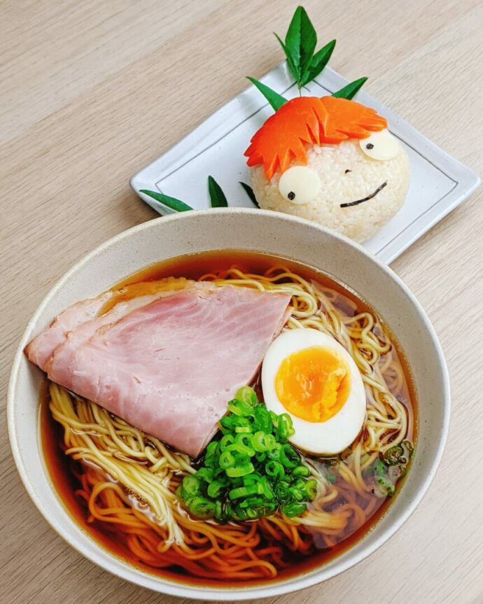

Ponyos ham Ramen Recipe

Recreate Lisas simple Ham Ramen recipe from the Studio Ghibli Anime "Ponyo" (which made me tear up fr)
Ingredients
- 1 package Chicken Ramen (the brand doesn't matter)
- 400ml boiling water
- 1 sliced cooked ham (cut in half)
- 1/2 hard boiled egg
- chopped green onion
Recipe instructions
- Boil the water.
- Place the noodles in a ramen bowl. Pour boiling water over the noodles and cover. Set and start your timer for three minutes
- After the first minute, quickly open, shake the noodles to separate, then arrange the ham, egg, and green onion over the noodles. Cover again and wait until the timer beeps.
Return to main page